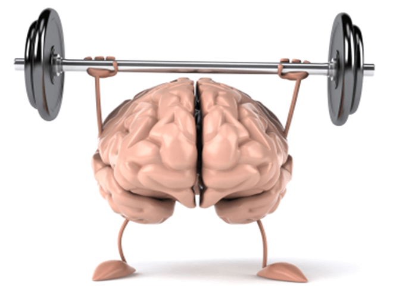
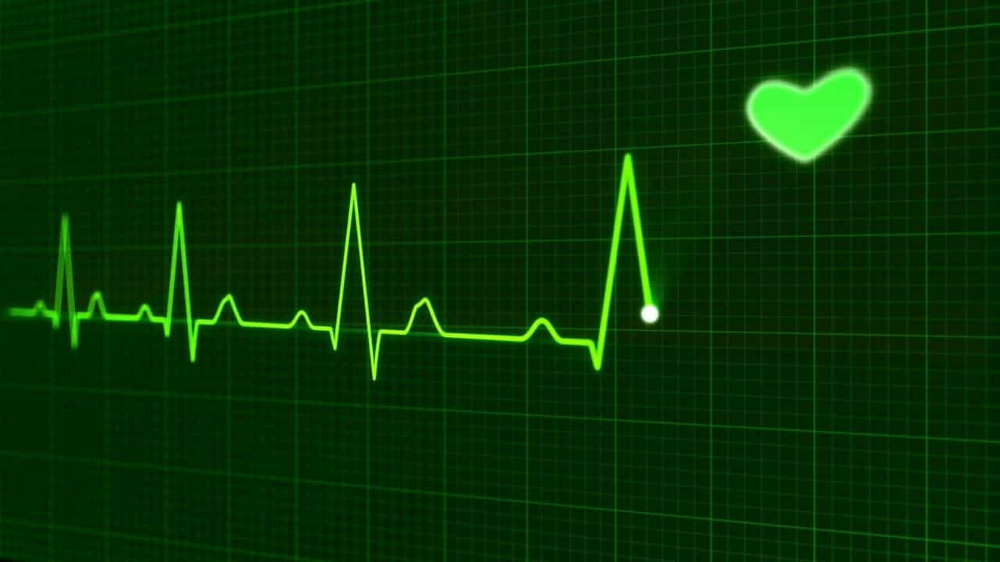

In order to fully appreciate what it is to feel completely comfortable and confident with our masculinity, it would do no harm to appreciate the biological factors underlying the emotions. Perhaps a worthy starting point for embarking on an exploration of male physicality would be to examine how your anatomy reacts on a date.
Why do we feel the way we do when we’re strongly attracted to someone? Do these emotions ebb and flow? Are there ways to enhance sexual awareness? At what particular time during a date are they likely to peak? The answers to these questions and many more can be gleaned by focusing on five key ways your body will react when going on a date with a sexually attractive woman.
1. Brain

This is your body’s control center so it makes sense it this organ that first kicks into action. This can occur long before you actually meet up with your partner, as simply thinking about them, texting or chatting over the phone will start to get those hormones buzzing with anticipation. Of course, there is nothing more stimulating than actually hooking up in person, and the moment your date glides into the bar of your choice in a drop-dead gorgeous short skirt and low-cut top, your brain will emit powerful neurotransmitters.
Basically what happens is this: eye contact will immediately cause nerve impulses to jolt against microscopic nerve fibers. These may be a series of tiny impacts but they will have a massive effect on your mood, especially your libido. When the nerve fibers are stimulated, chemical substances are released into your brain, known as neurotransmitters. That these are often referred to as your anatomy’s chemical messengers is so apt, and the messages they send determines how you respond.
In certain situations these neurotransmitters will recommend inhibitory action; say if you’re cautious or scared about something. But in a dating situation, they’ll be like so many Olympic torchbearers, carrying beacons of light announcing to the rest of your body you are well and truly turned on. More than that, these chemical messages can induce feelings of euphoria, in some cases not a hundred miles away from the rush provoked by artificial stimulants such as caffeine or recreational drugs.
2. Heart

As these chemicals from your brain are busy sending messages throughout your anatomy, one major organ that will also be affected will be your heart. So when your date comes to sit close to you, you may well begin to feel your pulse racing. The jolts of stimulation emanating directly from your brain will also cause your blood pressure to rise.
Those cliched romance novels might describe dating situations in flowery terms such as ‘my heart was racing’ or ‘his touch made me feel giddy’ but the fact is the sudden surge in cardiovascular activity will lead to you feeling a little light-headed or dizzy. Unless you want your date to worry you might be having some kind of episode, a worthwhile suggestion would be for you to take a few deep breaths in order to calm a quickening pulse.
3. Eyes
Apart from the obvious parts of her anatomy, the one aspect you will automatically be drawn to will be her eyes; the so-called windows into her soul. There are no real scientific reasons for this other than actually seeing the object of your desire will inspire those critical neurotransmitters to be scrambled into their furious activity.
What can be stated with certainty is the more she maintains eye contact with you during your date, the more intensely your hormones will be provoked into action.
4. Nose
Unlike the eyes, the nose is one feature of the human face that tends to be overlooked during any aesthetic appraisal and is only likely to get noticed if it happens to have defining aspects, such as its shape or size. But where it plays an absolutely crucial role in terms of the anatomy of dating is in the sense of smell.
The animal kingdom is wholly reliant on a scent for a huge number of reasons but particularly during mating. Male mammals can detect when a female is at her most sexually potent by the scent she is emitting. Again, this is down to chemicals, in this case, pheromones.
Although there has been much debate on the subject in the scientific community, research has revealed humans can send and receive subconscious odor signals, released through sweat and urine. While the properties of the latter as a sexual stimulant seem unlikely, there can be no doubt that the more hot-blooded a sex act becomes, the scent of tangy sweat ceases to be off-putting and can instead become an integral part of carnal appreciation.
But at the start of the date, the intoxicating aroma of her perfume or the smell of her freshly shampooed locks will undoubtedly send shivers down any rampant male’s spine.
5. Mouth

Going back to testosterone, because males can transmit this chemical directly through saliva, passionate kisses are something to be savored throughout your date. In fact, the more you enjoy uninhibited ‘French’ kisses, the more hormones will be released. Intimate mouth contact will flood her system with oxytocin, the reproductive chemical responsible for sexual arousal.
All these genetic factors will ensure the parts of your anatomy which may well come into play at the end of the night – your sexual organs if you hadn’t worked that out – will have been receiving stimulation throughout your date.
Read More: 7 Ways My Body Has Changed After Hitting 30